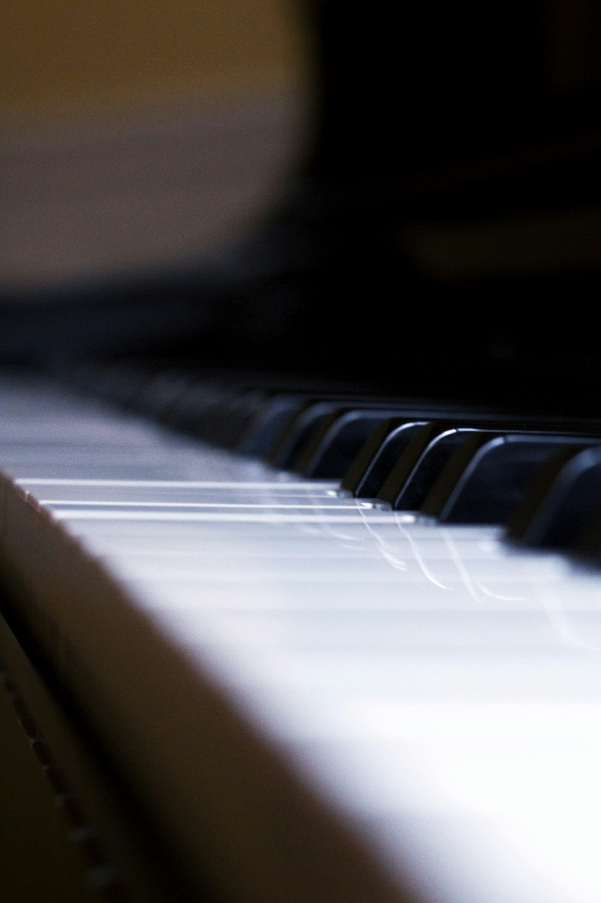

THU12NOV
After-dark piano trio
Soft edges, sharp keys.
19:30 / 21:00Sample set times
Meet the sessions ↗Settle into the sound
Live sessions, carefully chosen records, and evenings made for listening.
Find your kind of night ↗A little later. A little closer.
An intimate jazz listening room for the notes that linger. Come for the music. Let the rest of the evening find you.
A fictional venue. All sessions & dates are demo content.

01 / On the turntable & on the stage
November 12–14, 2026
An illustrative lineup. No tickets on sale.
After-dark piano trio
19:30 / 21:00Sample set times
Meet the sessions ↗Voice & upright bass
20:00 / 21:30Sample set times
Meet the sessions ↗Deep-listening vinyl night
19:00 / 22:00Sample set times
Meet the sessions ↗02 / A room with a point of view
Blue Hour imagines a small room with a big respect for sound. A place where the piano gets the last word, the silences matter, and nobody needs to know every record to belong.
We like our lights low, our welcomes warm, and our music right there in the room with you.
Step inside our story ↗Our sample evenings begin with time to settle in before the first set. Arrive unhurried; let the outside world fall away.
Quiet conversations between sets, phones on silent, and no flash. A little care makes a better room for everyone.
No dress code in this imagined room. No jazz quiz at the door. Curiosity is all you need to bring.
04 / Your people. Our kind of evening.
A milestone, a small celebration, a reason to gather.
Imagine a listening room that is yours for the evening.